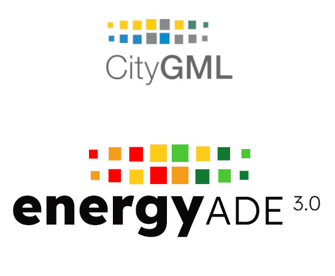
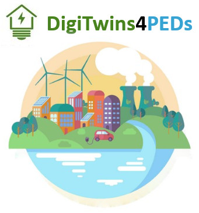
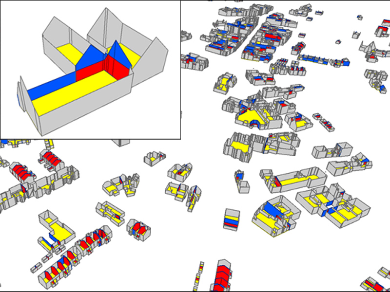

Projects

FlexPED
Energy Data and Flexibility Management for Positive Energy Districts
Duration: 2026–2029
Synopsis: FlexPED develops an open, intelligent, and scalable energy data management and flexibility framework for city districts, using an Urban Digital Twins platform integrated with generative AI as a decision support system.
Partners: Hochschule für Technik Stuttgart (Germany), TU Delft (Netherlands), Wroclaw University of Environmental and Life Sciences (Poland), Austrian Institute of Technology (Austria), GATE Institute (Bulgaria), InfoSolutions (Poland), BOSCH GmbH, Municipality of Stuttgart, Municipality of Sofia.
Funding: DUT Driving Urban Transition Call 2024 — NWO, FFG, BMBF, NCBR, Bulgarian National Science Fund, co-funded by the European Union.
RenoDAT
Accelerating building RENOvation and decarbonization through DATa integration
Duration: 2025–2029
Synopsis: RenoDAT accelerates energy renovations by addressing data governance, ownership, privacy, and harmonisation gaps in the implementation of Building Renovation Passports, developing a reliable data infrastructure for better renovation quality and climate goals.
Partners: Aedes, Chill Services, digiGO, Geonovum, Hanze UAS, Ministry of Housing and Spatial Planning, Municipalities of Amsterdam and Delft, OnderhoudNL, RVO, VU Amsterdam and others.
Funding: Dutch Research Council (NWO)

Energy ADE 3.0
CityGML Application Domain Extension for energy-related applications
Duration: 2024 (ongoing)
Synopsis: The CityGML Energy ADE offers an open, standardised data model for multi-scale Urban Energy Modelling. Version 3.0 builds on Energy ADE 1.0 (2018) and extends its scope for building energy performance simulation using semantic 3D city models.
Partners: DigiTwins4PEDs partners and volunteers. See project page for details.
Funding: Started within DigiTwins4PEDs, now developed as a wider consortium on voluntary basis.


DigiTwins4PEDs
Utilization of Urban Digital Twins to co-create flexible positive energy districts
Duration: 2023–2026
Synopsis: DigiTwins4PEDs uses Urban Digital Twins as a digital representation of the real world to model the energy aspects of cities, creating a platform for residents and stakeholders to exchange information and visualise PED scenarios before implementation.
Partners: Hochschule für Technik Stuttgart, Wroclaw UEALS, TU Delft, Austrian Institute of Technology, BOKU Vienna, InfoSolutions, Municipalities of Stuttgart, Wroclaw, Rotterdam, and Vienna.
Funding: DUT Driving Urban Transition Call 2022 — FFG, BMBF, NCBR, NWO, co-funded by the European Union.

Party walls and 3D BAG
Investigation on feasibility and implementation of algorithms to compute party walls from the 3D BAG
Duration: 2023
Synopsis: Goal is to evaluate pros and cons of existing algorithms to compute party walls from LoD2 buildings in the 3D BAG, and to define a strategy to embed such a process into the regular 3D BAG generation pipeline.
Partners: 3DGI, Rijksdienst voor Ondernemend Nederland (RVO).
Funding: RVO.